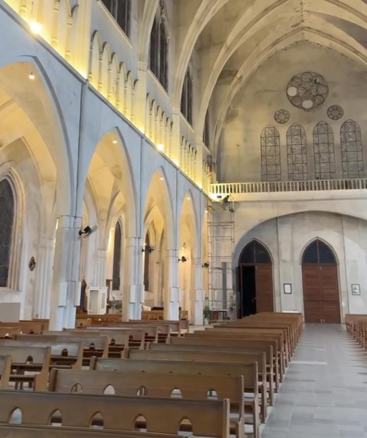
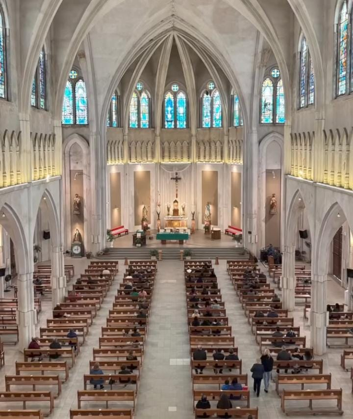
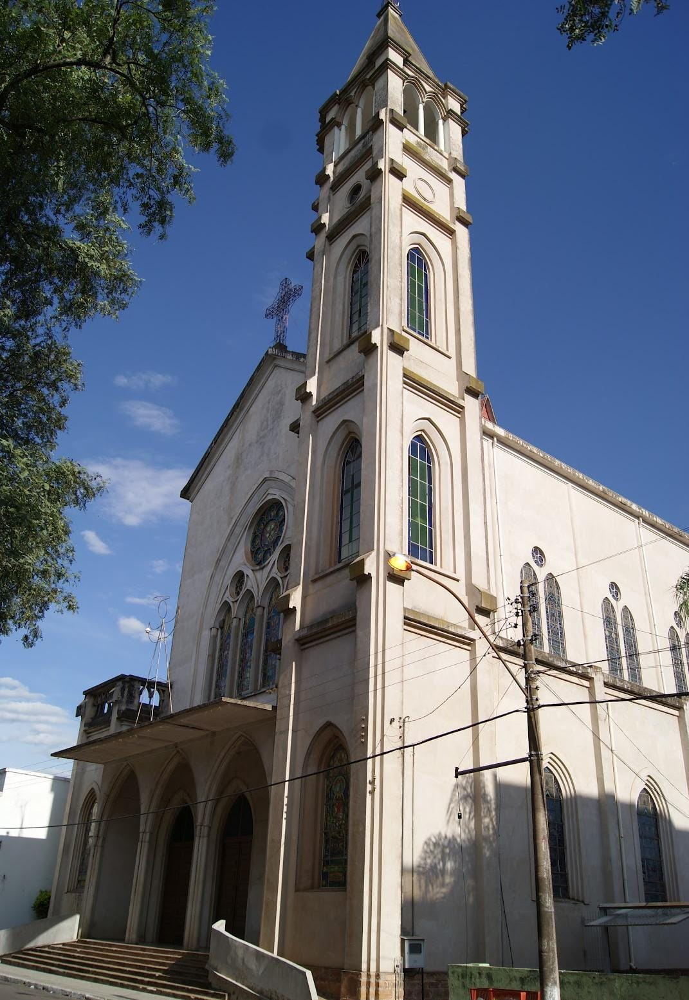

Igreja Matriz de São Patrício


Em pleno conflito farroupilha, no ano de 1837, a província de Itaqui ganhou uma pequena igreja para os fiéis, construída em pedra e telhado de capim. No ano de 1864, a cidade já emancipada começou a receber recursos do Intendente Municipal, Estancieiros e Comerciantes para a construção em estilo gótico da Igreja Matriz de São Patrício.
Esta igreja foi demolida em 1957 para a construção da atual. Conta a história que o nome São Patrício teria sido dado por comerciantes britânicos que aportavam pelo Rio Uruguai, e que deram o nome em homenagem ao padroeiro da Irlanda, São Patrício.
São Patrício teria vivido em meados do século 4 depois de Cristo. Nascido na Grã-Bretanha, ele foi capturado por piratas e enviado para a região onde hoje fica a Irlanda, onde viveu escravizado por anos, até conseguir se libertar e ingressar na Igreja Católica. Ordenado bispo, foi designado a levar o evangelho à ilha, local onde os romanos ainda não haviam chegado.
Itaqui é considerada a única cidade brasileira que tem São Patrício como padroeiro oficial do município. Anualmente, no dia 17 de março (St. Patrick's Day), a comunidade local realiza tradicionais procissões religiosas que culminam na Igreja Matriz, mesclando as festividades católicas com eventos culturais na cidade. A Igreja é Patrimônio Histórico e Cultural tombado pela Prefeitura Municipal.
Sábado às 19h / Domingo às 08h30 e 19h
Missa por Cura e Libertação - 1ª quinta-feira do mês às 19h
Missa da Saúde - sexta-feira às 15h
Segunda a sexta-feira das 8h às 11h30 / 14h às 17h30
Sábado das 8h às 11h30
